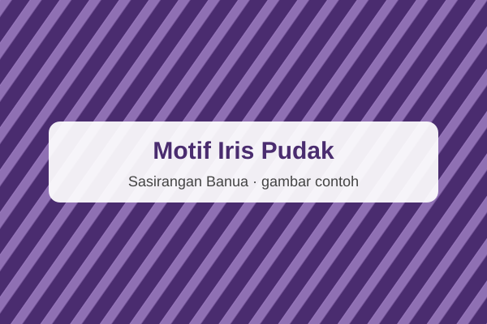

Kain Motif Gigi Haruan
Kain katun 2 meter bermotif zig-zag menyerupai gigi ikan haruan.
Rp185.000
Dibuat tangan oleh pengrajin Kampung Sasirangan dengan motif warisan Urang Banjar. Setiap helai kain membawa cerita tentang budaya Banua.
Lihat KatalogPilihan kain, busana, dan aksesoris Sasirangan terbaru.
Kain katun 2 meter bermotif zig-zag menyerupai gigi ikan haruan.
Rp185.000

Motif bunga kacang yang melambangkan keakraban dan kerukunan.
Rp175.000

Kain sasirangan dengan motif bayam raja khas Banjar.
Rp190.000

Kain sasirangan dengan motif iris pudak yang khas.
Rp180.000

Kain sasirangan dengan motif naga balimbur khas Banjar.
Rp200.000
Kain sasirangan motif gigi haruan untuk koleksi pilihan.
Rp225.000
Sasirangan Banua adalah UMKM (fiktif, untuk latihan) yang memproduksi kain sasirangan dengan teknik jahit-ikat-celup tradisional. Kami bekerja sama dengan pengrajin lokal untuk menjaga warisan budaya Kalimantan Selatan.
| Hari | Jam Buka |
|---|---|
| Senin–Kamis | 08.00–17.00 |
| Jumat | 08.00–11.00 dan 14.00–17.00 |
| Sabtu–Ahad | 09.00–16.00 |